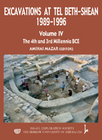

Amihai mazar
Excavations at Tel Beth-Shean, Volume IV: The Fourth and Third Millennia BCE
Jerusalem: The Hebrew University and the Israel Exploration Society , Jerusalem 2012
|  | This volume is the fourth and final in the series of final reports on the Beth-Shean Valley Archaeological Project, directed by Amihai Mazar on behalf of the Hebrew University of Jerusalem between the years 1989-1996. The volume presents the results of the excavations at Tel Beth-Shean from the Early Bronze Age and the Intermediate Bronze Age. A substantial EBIB building in Area M was violently destroyed and rebuilt shortly afterwards. Its plan and rich finds have implications on our understanding of social and economic aspects of this formative period. After a gap in Early Bronze II, the Early Bronze III is represented by a series of occupation phases, most of them accompanied by a large amount of Khirbet Kerak Ware, confirming that Beth-Shean was the southernmost settlement site of the 'Khirbet Kerak people'. After a possible occupation gap, an ephemeral Intermediate Bronze Age settlement existed for a short time on top of the abandoned Early Bronze Age city. To order the book please fill out this form. If you have any questions, email: ies@vms.huji.ac.il |
{kind=link}
| Back to Publications |